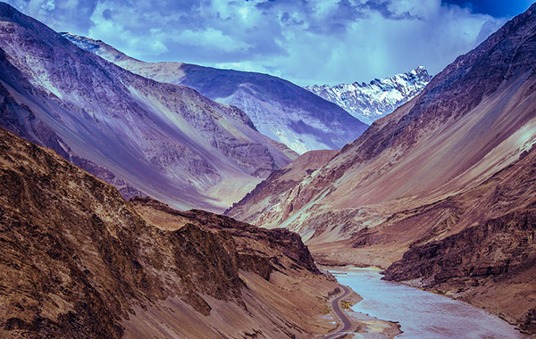

The Great Himalayan Range
The Himalayas, or Himalaya, form a mountain range in Asia separating the plains of the Indian subcontinent from the Tibetan Plateau.
The Himalayan range has many of the Earth's highest peaks, including the highest, Mount Everest. The Himalayas include over fifty mountains exceeding 7,200 metres in elevation, including all of the fourteen 8,000 metre peaks. By contrast, the highest peak outside Asia is 6,961 metres tall.
Geography
Lifted by the subduction of the Indian tectonic plate under the Eurasian Plate, the Himalayan mountain range runs, west-northwest to east-southeast, in an arc 2,400 kilometres (1,500 mi) long. Its western anchor, Nanga Parbat, lies just south of the northernmost bend of Indus river. Its eastern anchor, Namcha Barwa, is just west of the great bend of the Yarlung Tsangpo River (upper stream of the Brahmaputra River). The Himalayan range is bordered on the northwest by the Karakoram and Hindu Kush ranges, to the north, the chain is separated from the Tibetan Plateau by a 50–60 kilometres wide tectonic valley called the Indus-Tsangpo Suture. Towards the south the arc of the Himalaya is ringed by the very low Indo-Gangetic Plain. The range varies in width from 350 kilometres (220 mi) in the west (Kashmir) to 150 kilometres (93 mi) in the east (Arunachal Pradesh).

Culture
The Himalayan population belongs to four distinct cultural groups, who throughout history have systematically penetrated the isolated indigenous Himalayan population. Those migrating cultures – Hindu (Indian), Buddhist (Tibetan), Islamic (Afghanistan–Iran) and Animist (Burmese and south-eastern Asian) – without any doubt have created here their own individual and unique place. Their current arrangement, though with a few exceptions, is linked to specific geographical regions, and the relative altitude at which they occur.
There are many cultural aspects of the Himalayas. For the Hindus, the Himalayas are personified as Himavath, the father of the goddess Parvati. The Himalayas is also considered to be the father of the river Ganges. The Mountain Kailash is a sacred peak to the Hindus and is where the Lord Shiva is believed to live. Two of the most sacred places of pilgrimage for the Hindus is the temple complex in Pashupatinath and Muktinath, also known as Saligrama because of the presence of the sacred black rocks called saligrams.
Lakes
The Himalayan region is dotted with hundreds of lakes. Most lakes are found at altitudes of less than 5,000 m, with the size of the lakes diminishing with altitude. Tilicho Lake in Nepal in the Annapurna massif is one of the highest lakes in the world. Pangong Tso, which is spread across the border between India and China, and Yamdrok Tso, located in central Tibet, are amongst the largest with surface areas of 700 km², and 638 km², respectively. Other notable lakes include She-Phoksundo Lake in the Shey Phoksundo National Park of Nepal, Gurudongmar Lake, in North Sikkim, Gokyo Lakes in Solukhumbu district of Nepal and Lake Tsongmo, near the Indo-China border in Sikkim.
Quick Links

Jaipur is a standout amongst the most socially rich legacy urban areas in India. Established in the year 1727, the city is named after Maharaja Jai Singh II who was the primary organizer of this city.

The list of the best places to visit during your trip to Goa on the rented scooters available for the tourists. The guide to enhance yor trip to famous beaches and the local parties.

Himachal Pradesh is one of the states that lies in the Indian Himalayan Region, one of the richest reservoirs of biological diversity in the world. Famous for it's simplicity...
Ladakh ("land of high passes") is a region in the Indian state of Jammu and Kashmir that currently extends from the Kunlun mountain range to the main Great Himalayas...